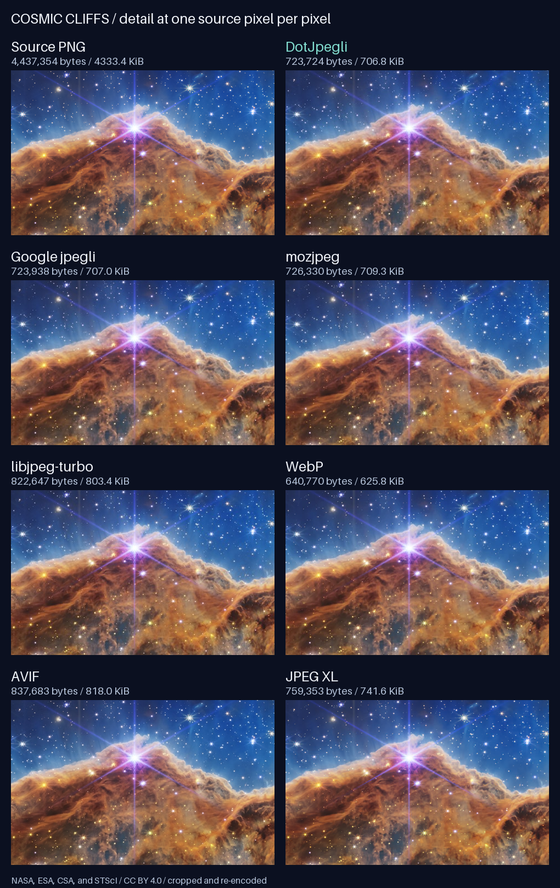

Standard and progressive JPEG
Save standard JPEGs or progressive JPEGs that load in stages, with simple quality controls.
A C# JPEG encoder for .NET.
DotJpegli is a JPEG encoder for .NET based on Google Jpegli. It saves color or grayscale images as standard or progressive JPEGs, with options for image quality, color profiles, and metadata.
It is written entirely in C# with no native libraries, unsafe code, or extra packages required.
Visual Comparison
Fine clouds of dust, rich color, and thousands of stars make the James Webb Space Telescope's Cosmic Cliffs a good test for image compression. Click the 2400 × 1390 source photograph to view it at full size:
Each encoder compressed the same source image using typical high-quality settings. Higher quality scores mean the result looks closer to the original:
| Encoder | File size | Quality score |
|---|---|---|
| Original PNG | 4,333.4 KiB | 100.00 |
| DotJpegli 5.0.0 | 706.8 KiB | 80.49 |
| Google Jpegli (C++) | 707.0 KiB | 80.49 |
| mozjpeg 4.1.1 | 709.3 KiB | 78.92 |
| libjpeg-turbo 3.2.0 | 803.4 KiB | 80.41 |
| WebP 1.6.0 | 625.8 KiB | 82.28 |
| AVIF (libavif 1.4.2) | 818.0 KiB | 86.85 |
| JPEG XL (libjxl 0.12.0) | 741.6 KiB | 88.02 |
Because each format uses its own quality scale, these files are not tuned to match exact visual quality or file size. The image below shows the same 480 × 300 section from each version at full size so you can compare stars, dust clouds, and color gradients:

Capabilities
Full-featured JPEG compression written in C#, with no native libraries or extra packages required.
Save standard JPEGs or progressive JPEGs that load in stages, with simple quality controls.
Encode 8-bit, 16-bit, or floating-point pixel data in RGB, BGR, grayscale, and other color formats.
Embed or convert ICC color profiles, and read, edit, or write Exif, XMP, IPTC, and comment metadata.
Write to byte arrays or streams, cancel long operations, and optionally use multiple CPU cores.
Runs on .NET Standard 2.1, .NET 10, and .NET 11, using hardware vector acceleration on modern .NET.
Written entirely in safe C# with no native libraries, unsafe code, or extra packages required.
Standalone Tooling
To convert images from the terminal without writing code, download dotjpegli
from Releases. Installers
and standalone downloads are available for Windows, Linux, and macOS, and do not
require .NET to be installed.
dotjpegli encode input.png output.jpg --quality 90 --progressiveSee the CLI guide for installation and command options.
Per-user .msi installer (adds dotjpegli to user PATH), portable .zip archive, and standalone .exe executable.
Debian/Ubuntu .deb, Fedora/RHEL/openSUSE .rpm, single-file .AppImage, .flatpak bundle, and portable .tar.gz.
Apple Silicon .pkg installer (installs /usr/local/bin/dotjpegli) and standalone .tar.gz archive.
Library API
Add the NuGet package to your project and encode pixels to a byte array or stream.
dotnet add package DotJpegli --version 5.0.0Runs on .NET Standard 2.1, .NET 10, and .NET 11.
dotnet add path/to/YourApp.csproj reference src/DotJpegli/DotJpegli.csprojSee the development guide for SDK requirements and building from source.
using DotJpegli;
byte[] rgbPixels = [255, 0, 0]; // One red pixel (R, G, B).
byte[] jpeg = JpegliEncoder.Encode(rgbPixels, width: 1, height: 1, options: new()
{
Quality = 85
});
File.WriteAllBytes("output.jpg", jpeg);
By default, Encode writes a standard JPEG at quality 85. Transparency is
ignored, so blend transparent images onto a background before encoding. See the
encoding guide
for other pixel formats and input options.
using FileStream output = File.Create("progressive.jpg");
JpegliEncoder.Encode(output, rgbPixels, width: 1, height: 1, options: new()
{
Quality = 85,
Progressive = true
});Writing to a stream avoids creating a separate byte array in memory for the finished file. See compression options for more ways to adjust quality and file size.
Benchmarks
These charts compare DotJpegli with Google's C++ Jpegli encoder across 24 standard test photographs.
Across the 24 photographs, DotJpegli took 37–42% less time than Google's C++ encoder for progressive JPEGs, and 14–15% less time for standard JPEGs.
DotJpegli reuses internal buffers, allocating 79–109 KiB of memory per image (including the finished JPEG), compared with 1.9–4.3 MiB requested per image by Google's C++ encoder.
On the synthetic test patterns shown alongside the photographs, DotJpegli is also faster on average, though the C++ encoder is still faster on some simple patterns like smooth gradients. See performance details for the full benchmark results and test setup.
Reference Guides
Guides covering image formats, color profiles, metadata, compression settings, and benchmarks.
Pixel formats, color spaces, streams, and input limits.
Color profiles (ICC), Exif, XMP, IPTC, and metadata editing.
Quality settings, progressive JPEGs, multi-threading, and memory limits.
Command-line options, standalone downloads, and installers.
Custom compression tables and HDR tuning.
Source photograph, encoder settings, file sizes, and reproduction steps.
Building from source, project design, and running tests.
How NuGet packages and GitHub releases are published.
How image quality and file sizes compare with Google's C++ Jpegli.
How encoding speed and memory use are measured.
DotJpegli creates JPEG files; it does not decode (read) existing JPEGs. Like all standard JPEGs, the output is 8-bit and uses lossy compression—even at quality 100 or when starting from 16-bit or floating-point pixels.
Jpegli's quality numbers do not match libjpeg one-for-one, so the
same number may produce a different file size or look than other JPEG encoders.
DotJpegli is tested to match Google's C++ Jpegli closely in
image quality and file size,
though the two encoders do not always produce identical files byte-for-byte.